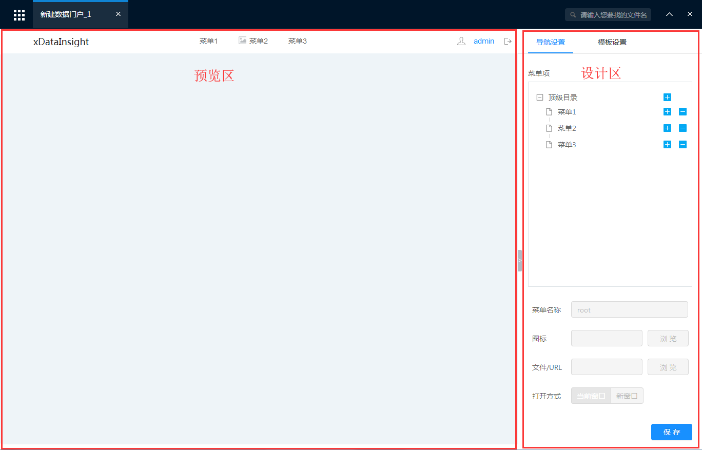
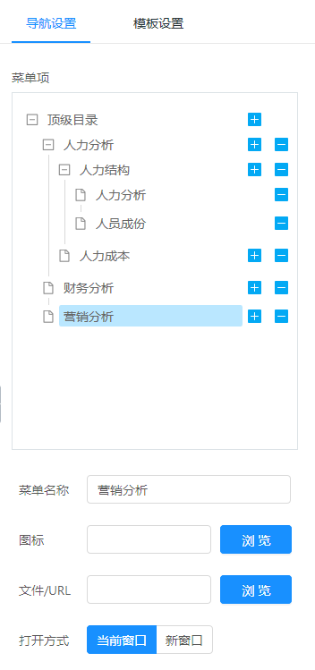
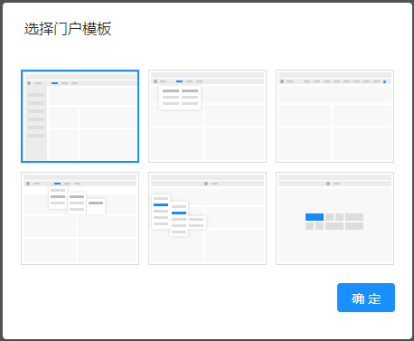

数据门户
数据门户
点击主菜单 =>分析与报表 =>新建数据门户，选择一个门户模板后打开数据门户设计器

上图是数据门户界面，分为预览区和设计区，我们在设计区中作出的设置，在预览区可以即时得到呈现。可点击按钮收起设计区，所有区域完全供预览展示
页面菜单设置
在设计区中导航设置页面，可设置页面的标签和菜单。菜单深度最多包含3层，每个菜单项均可以设置文字和图标，并设置点击时是否打开一个页面

有的模板不支持层次结构的菜单，该类模板会将菜单内容逐一显示而无法体现出菜单层级
选择门户模板
当进入数据门户模块时，将提示你选择一个门户模板，系统提供6个默认模板，分别将页面组织成不同的形态

在门户制作过程当中，也可以随时切换模板。点击设计区中的“模板设置”标签，选择模板右侧的“切换”按钮，可再次弹出上图中的选择门户模板对话框，切换模板后，左侧的预览区将即时反应变化
模板设置
切换到模板设置标签后，可以设计页面的标题、Logo图标、首页（打开该数据门户时应展示的页面）、主题色彩和用户信息的隐藏和显示 对于logo图标，可以先上传到平台的门户系统中，再点击浏览按钮选择，也可以手动输入图标的URL地址 对于主题色彩，提供了3种主题色彩选择，将改变整个页面框架的色彩，以对加载的内容进行风格适配统一

门户保存
完成制作之后，点击保存按钮，输入名称并选择保存位置即可保存到平台。并可以文件管理中浏览和打开。